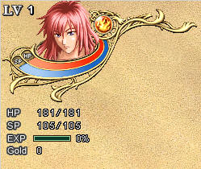
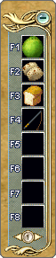
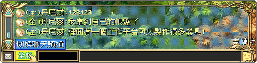
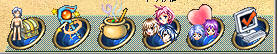

| 一、基本操作：
主要功能共有五个，分别是：角色状态、快速功能、快捷工具栏、交谈功能、系统功能
角色状态：一般画面左上角会秀出玩家大头图、等级Lv、经验值EXP、金钱Gold，圆球部份会显玩家所选择的属性、红色能量条显示HP、蓝色能量条显示SP，另外还有跟随NPC的小头图标和基本能量条图标。

快速功能：在画面的右上角排成一列，包含PK、参战、观战、加入队伍、结交好友、商业共五个选项。
|
PK：可与玩家PK（挑战）指令。
参战：可加入其它玩家的战斗。
观战：可观看其它玩家的战斗。
加入队伍：可与其它玩家互相组队结伴而行的指令。
结交好友：可与其它玩家结交为好友的指令。
商业：可以开启各项金钱交易的窗口，包括有交易和贩卖各个物品、宠物、器具，也可丢弃金钱。 |
| 快捷工具栏：屏幕右方的快捷工具栏有八个格子，可以用来摆放物品或特技以便在战斗中使用，食物可以在一般场景食用。进入战斗画面时，可以使用快捷工具栏中的特技，方法为直接按格子上所显示的热键，并选择要使用在队友或敌人身上，或者直接点选格子内的物品或特技，并指定使用的对象也可以。 |
 |
交谈功能：画面中最下方有一个长条字段，可输入发话内容。左边的小框可以自由切换聊天频道，选择您想交谈的对象。而右边有表情符号可选择，以便在交谈中增添乐趣。
|  |
轻频：只有同一个场景的玩家看得到
密频：只有玩家和密频对象看得见
队频：和同队的队友可以互通消息
组频：组织内互通的频道
全频：则可让在线全部玩家都看得见 |
系统功能：系统功能列置于画面右下方，共有六项功能，点选之后可开启接口，分别是状态物品、特技、合成、队伍组织、交友情感、系统选项。
 |